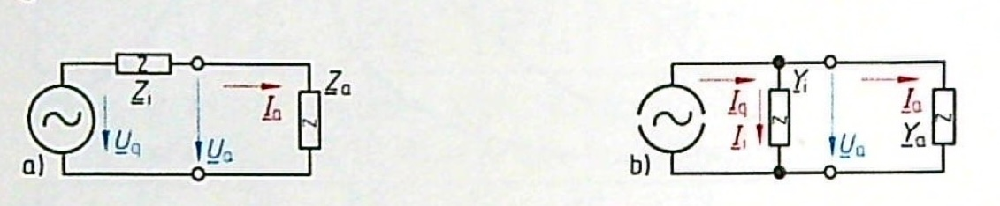
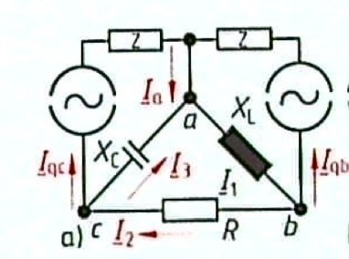

19 Komplexe Wechselstromrechnung
- Komplexer Spannungs- und Stromteiler
- Anpassung
- Überlagerungsverfahren
- Maschenstromverfahren
- Knotenpotentialerfahren
- Brückenschaltung?
19.1 Komplexer Spannungs- und Stromteiler
Der Spannungs- und Stromteiler ist bereits aus GEL1 bekannt. Unter Anwendung der komplexen Zahlen können diese Konzepte auf den Sinusstrom übertragen werden.

Entn. aus (Fricke und Vaske 1982)
19.2 Leistungsanpassung
Bei der Leistungsanpassung soll der Empfänger die größtmögliche Leistung übertragen bekommen.

Entn. aus (Fricke und Vaske 1982)
\[\underline{Z}_a = \underline{Z}_i^*\]
\[\underline{Y}_a = \underline{Y}_i^*\]
19.3 Blindleistungskompensation
Da eine Induktivität positive Blindleistung aufnimmt und eine Kapazität negative Blindleistung, kann man die Zweipole so zusammenschalten, dass sich die Blindleistungen gegenseitig ausgleichen. Damit werden die Zuleitungen durch weniger Blindleistung belastet. Dieses Vorgehen nennt man Blindleistungskompensation.

Entn. aus (Dzieia u. a. 2016)
19.4 Überlagerungsprinzip
Das Überlagerungsprinzip darf nur in linearen Netzwerken benutzt werden.
Bei Sinusstrom gilt Linearität bei den komplexen Effektivwerten \(\underline{U}\) und \(\underline{I}\), sowie bei den komplexen Scheitelwerten \(\underline{\hat{u}}\) und \(\underline{\hat{i}}\).
Bei dem Überlagerungsprinzip berechnet man das Netzwerk für jede Quelle einzelnd. Spannungsquellen werden kurzgeschlossen und Stromquellen werden abgetrennt. Nach Berechnung z.B. aller Teilströme für alle einzelnd wirksamen Quellen, wird aus allen Teilströmen der Gesamtstrom berechnet.

Entn. aus (Fricke und Vaske 1982)
19.5 Maschenstromverfahren
Das Maschenstromverfahren kann auf Sinusstromnetzwerke angewendet werden, indem man die reellen Gleichstromgrößen durch die komplexen Größen \(\underline{U}\), \(\underline{I}\) und \(\underline{Z}\) ersetzt.
Zusammenfassung des Maschenstromverfahrens:
Vorbereitung:
- Vereinfachung des Netzwerkes als Graphen
- Einzeichnen des vollständigen Baumes (Verbindung aller Knoten ohne Maschen/Schleifen zu erzeugen)
- alle Zweige des Baumes sind Baumzweige/Verbindungszweige -> Maschenströme
Maschenumläufe:
- \(m = z - k + 1\) Maschengleichungen (= Anzahl Verbindungszweige)
- m: Anzahl Maschengleichungen
- z: Anzahl Zweige insgesamt
- k: Anzahl Knoten insgesamt
- Maschenumläufe einzeichnen (jeder Verbindungszweig nur 1-mal durchlaufen; der Umlaufsinn entspricht der Flussrichtung der Maschenströme)
- Maschengleichungen aufstellen
Knotengleichungen:
- \(r = k - 1\) Anzahl Knotengleichungen
- Knotengleichungen nach Baumzweigen umstellen
Kombinieren:
- Knotengleichungen im Maschengleichungen einsetzen
- Maschenströme als Spalte; Quellspannungen nach rechts
- Impedanzmatrix aufstellen
Kontrolle:
- Hauptdiagonale: Umlaufimpedanzen
- Koppelimpedanzen: gehören zu mehr als einer Maschen -> negatives Vorzeichen, wenn Umlaufrichtungen entgegengesetzt sind
- Quellspannungen: sind positiv wenn sie entgegen des Maschenumlaufsinns sind
- Symmetrie:
- Maschenumlaufsinn entsprechend Maschenströme
- Spaltenn und Zeilen richtig sortiert
Sonderfälle:
- reale Stromquelle:
- Umwandlung in reale Spannungsquelle
- Stromzweig muss nachträglich berechent werden
- ideale Stromquelle:
- Stromzweig als Maschenstrom
- nur 1 Maschenumlauf über den Zweig q
19.6 Knotenpotentialverfahren
Das Knotenpotentialverfahren kann auf Sinusstromnetzwerke angewendet werden, indem man die reellen Gleichstromgrößen durch die komplexen Größen \(\underline{U}\), \(\underline{I}\) und \(\underline{Z}\) bzw. \(\underline{Y}\) ersetzt.
Zusammenfassung des Maschenstromverfahrens:
- willkürlich Ströme ins Netzwerk einzeichnen
- Impedanzen in Admittanzen umwandeln
- Spannungsquellen in Stromquellen umwandeln (bewirkt eine Änderung der Anzahl an Strömen im Netzwerk)
- Null-Bezugspotential \(\varphi_0 = 0\) festlegen
- restlichen Knoten nummerieren
- Knotenpotentiale einzeichnen + restliche Spannungen (in Stromrichtung einzeichnen)
- Knotengleichungen aufstellen
- Ströme als Produkt aus Spannung \(\cdot\) Leitwert darstellen
- Spannungen aus Knotenpotentialen darstellen
- Spannungen in Knotengleichung einsetzen (Gleichungen bestehen aus Leitwerten und Knotenpotentialen)
- invertieren, umstellen, sortieren
- Admittanzmatrix aufstellen
Shortcut:
- Matrix ist symmetrisch um die Hauptdiagonale
- HD sind Knotenadmittanzen
- andere Admittanzen sind Koppeladmittanzen (die zwischen 2 Knoten sitzen); sie sind immer negativ
- Stromvektor besteht aus Quellströmen (auf Knoten zu -> positiv; von Knoten weg -> negativ)
19.7 Übungen
19.7.1 Übung 9.1 (Zusammenfassung komplexer Impedanzen)
(Albach Kapitel 8 Level 2 Aufgabe 8.8)
Gegeben ist das folgende Netzwerk.

Entn. aus (Albach und Fischer 2020)
Bestimmen Sie die Eingangsimpedanz \(\underline{Z}_E\) für das gegebene Netzwerk, indem Sie nacheinander geeignete Teilnetzwerke zusammenfassen und entsprechende Abkürzungen einführen.
Reihenschaltung von \(R_1\) und \(C_1\):
\[\underline{Z}_1 = R_1 + \frac{1}{j \omega C_1}\]
Reihenschaltung von \(R_2\) und \(C_2\):
\[\underline{Z}_2 = R_2 + \frac{1}{j\omega C_2}\]
Reihenschaltung von \(R_3\) und \(L_3\):
\[\underline{Z}_3 = R_3 + j\omega L_3\]
Parallelschaltung von \(L_1\) und \(R_4\):
\[\underline{Z}_4 = \frac{R_4 \cdot j\omega L}{R_4 + j\omega L}\]

Entn. aus (Albach und Fischer 2020)
Parallelschaltung von \(\underline{Z}_2\) und \(\underline{Z}_3\):
\[\underline{Z}_5 = \frac{\underline{Z}_2 \cdot \underline{Z}_3}{\underline{Z}_2 + \underline{Z}_3} = \frac{\left( R_2 + \frac{1}{j\omega C_2} \right) \cdot (R_3 + j\omega L_3)}{R_2 + \frac{1}{j\omega C_2} + R_3 + j\omega L_3} = \frac{(1 + j\omega C_2 R_2)\cdot (R_3 + j\omega L_3)}{1 - \omega^2 C_2 L_3 + j \omega C_2 (R_2 + R_3)}\]
Reihenschaltung von \(\underline{Z}_1\), \(\underline{Z}_5\) und \(\underline{Z}_4\):
\[\underline{Z}_E = \underline{Z}_1 + \underline{Z}_5 + \underline{Z}_4\]
19.7.2 Übung 9.2 (Netzwerkberechnung)
(Hagmann Aufgabe 7.4)
Die im Bild angegebene Schaltung enthält die ohmschen Widerstände \(R_1 = 150\,\Omega\), \(R_2 = 200\,\Omega\) und \(R_3 = 350\,\Omega\). Die beiden vorhandenen Spulen haben die Induktivitäten \(L_1 = 10\,mH\) und \(L_2 = 30\,mH\). Der Kondensator besitzt die Kapazität \(C = 1\,\mu F\). Die Schaltung liegt an der Spannung \(U = 40\,V\) der Frequenz \(f = 1,2\,kHz\).
Es sind alle auftretenden Ströme zu berechnen.

Entn. aus (Hagmann 2019)
####Lösung 9.2
Berechnung der Blindwiderstände:
\[\omega L_1 = 2\pi \cdot 1,2\,kHz \cdot 10\,mH = 75,4\,\Omega\]
\[\omega L_2 = 2\pi \cdot 1,2\,kHz \cdot 30\,mH = 226\,\Omega\]
\[\frac{1}{\omega C} = \frac{1}{2\pi \cdot 1,2\,kHz \cdot 1\,\mu F} = 133\,\Omega\]
Berechnung der Impedanzen:
\[\underline{Z}_2 = R_2 + j\omega L_2 = (200 + j226)\,\Omega\]
\[\underline{Z}_3 = R_3 + \frac{1}{j \omega C} = (350 - j133)\,\Omega\]
Parallelschaltung von \(\underline{Z}_2\) und \(\underline{Z}_3\):
\[\underline{Z}_{23} = \frac{\underline{Z}_2 \underline{Z}_3}{\underline{Z}_2 + \underline{Z}_3} = \frac{(200 + j226)\cdot (350 - j133)}{(200 + j 226) + (350 - j133)}\,\Omega = 203\,\Omega \angle{18,1°}\]
Mit Spannung \(\underline{U}\) als Bezugsgröße und reell:
\[\underline{I}_1 = \frac{\underline{U}}{\underline{Z}_1 + \underline{Z}_{23}} = \frac{40\,V}{(150 + j75,4 + 203 \angle{18,1°})\,\Omega} = 108\,mA \angle{-22°}\]
Stromteiler:
\[\underline{I}_2 = \underline{I}_1 \frac{\underline{Z}_3}{\underline{Z}_2 + \underline{Z}_3} = 108\,mA \angle{-22°} \frac{(350 - j133)\,\Omega}{(200 + j226 + 350 - j133)\,\Omega} = 73\,mA\angle{-52,4°}\]
Knotenregel:
\[\underline{I}_3 = \underline{I}_1 - \underline{I}_2 = 108\,mA\angle{-22°} - 73\,mA\angle{-52,4°} = 59\,mA\angle{16,9°}\]
19.7.3 Übung 9.3 (Leistungsanpassung)
(Hagman Aufgabe 7.31)
Die im Bild dargestellte Schaltung enthält eine Spannungsquelle mit dem (ohmschen) Innenwiderstand \(R_i = 100\,\Omega\). Die Frequenz der gelieferten Spannung beträgt \(f = 100\,Hz\). Ein ohmscher Belastungswiderstand (Verbraucherwiderstand) \(R_a = 10\,\Omega\) soll -wie dargestellt- übe eine LC-Kombination an die Spannungsquelle angeschlossen werden. Dabei sollen die Induktivität \(L\) und die Kapazität \(C\) so gewählt werden, dass Wirkleistungsanpassung besteht, \(R_a\) also die maximal mögliche Wirkleistung aufnimmt.
Welche Werte sind für \(L\) und \(C\) erforderlich?

Entn. aus (Hagmann 2019)
Zusammenfassen der RLC-Kombination:
\[\underline{Y}_a = \frac{1}{\underline{Z}_A} = j \omega C + \frac{1}{R_a + j \omega L} = j \omega C + \frac{1}{R_a + j\omega L} \cdot \frac{R_a - j\omega L}{R_a - j\omega L} = j\omega C + \frac{R_a}{R_a^2 + (\omega L)^2} - j \frac{\omega L}{R_a^2 + (\omega L)^2}\]
Für Wirkleistungsanpassung gilt: \(\underline{Z}_a = \underline{Z}_i^*\)
\[\underline{Z}_i^* = R_i = \underline{Z}_i\]
\[\underline{Z}_a = R_i\]
\[\frac{1}{R_i} = \frac{1}{\underline{Z}_a} = \underline{Y}_a = j\omega C + \frac{R_a}{R_a^2 + (\omega L)^2} - j \frac{\omega L}{R_a^2 + (\omega L)^2}\]
Trennung Real- und Imaginärteil:
\[\frac{1}{R_i} = \frac{R_a}{R_a^2 + (\omega L)^2}\]
\[j \omega C - j \frac{\omega L}{R_a^2 + (\omega L)^2} = 0\]
- Gleichung Induktivität:
\[L = \frac{1}{\omega} \sqrt{R_i R_a - R_a^2} = \frac{1}{2\pi \cdot 100\,Hz} \cdot \sqrt{100 \cdot 10 - 10^2}\Omega = 47,7\,mH\]
- Gleichung Kapazität:
\[C = \frac{L}{R_a^2 + (\omega L)^2} = \frac{47,7\,mH}{(10\,\Omega)^2 + (2\pi \cdot 100\,Hz \cdot 47,7\,mH)^2} = 47,7\,\mu F\]
19.7.4 Übung 9.4 (Blindleistungskompensation)
(Vaske/Fricke Beispiel 3.103)
Ein Verbraucher entnimmt einem Netz für die Sinusspannung \(U = 20\,kV\) bei der Frequenz \(f = 50\,Hz\) die Wirkleistung \(P = 300\,kW\) bei dem induktiven Wirkfaktor \(\cos(\varphi) = 0,8\). Der Wirkfaktor soll auf \(\cos(\varphi ') = 0,95\) verbessert werden. Die erfoderliche Kapazität \(C\) soll bestimmt werden.
####Lösung 9.4

Entn. aus (Fricke und Vaske 1982)
Berechnung Scheinleistung:
\[S = \frac{P}{\cos(\varphi)} = \frac{300\,kW}{0,8} = 375\,kVA\]
Scheinleistung nach Kompensation:
\[S' = \frac{P}{\cos(\varphi ')} = \frac{300\,kW}{0,95} = 315,8\, kVA\]
Phasenwinkel berechnen:
\[\varphi = \arccos(0,8) = 36,87°\]
\[\varphi ' = \arccos(0.95) = 18,19°\]
ursprüngliche induktive Blindleistung:
\[Q_L = S \cdot \sin(\varphi) = 375 \, kVA \cdot \sin(36,87°) = 225 \, kvar\]
induktive Blindleistung nach Kompensation:
\[Q'_L = S' \cdot \sin(\varphi ') = 315,8 \, kVA \cdot \sin(18,19°) = 98,58 \, kvar\]
kapazitive Blindleistung:
\[|Q_C| = Q_L - Q'_L = 225 \, kvar - 98,58 \, kvar = 126,42 \, kvar\]
Kapazität berechnen:
\[C = \frac{|Q_C|}{\omega U^2} = \frac{126,42 \, kvar}{2\pi \cdot 50 \,Hz \cdot (20\,kV)^2} = 1,006\, \mu F\]
19.7.5 Übung 9.5 (Maschenstromverfahren)
(Hagmann Aufgabe 7.27)
In der Schaltung haben die ohmschen Widerstände die Werte \(R_1 = 85\,\Omega\), \(R_2 = 35\,\Omega\) und \(R_3 = 75\,\Omega\). Die Induktivitäten der Spulen betragen \(L_1 = 21,22\,mH\) und \(L_2 = 50,4\,mH\). Der vorhandene Kondensator besitzt die Kapazität \(C = 17,68 \,\mu F\). Die Versorgungsspannung hat eine Frequenz von \(f = 300\,Hz\) und beträgt \(U = 100\,V\).
Die Widerstandsmatrix soll über das Maschenstromverfahren aufgestellt werden.

Entn. aus (Hagmann 2019)
Berechnung der Blindwiderstände:
\[\omega L_1 = 2\pi \cdot 300\,Hz \cdot 21,22\,mH = 40\,\Omega\]
\[\omega L_2 = 2\pi \cdot 300\,Hz \cdot 50,4\,mH = 95\,\Omega\]
\[\frac{1}{\omega C} = \frac{1}{2\pi \cdot 300\,Hz \cdot 17,68\, \mu F} = 30 \,\Omega\]
Maschenströme: \(\underline{I}_1\), \(\underline{I}_2\) und \(\underline{I}_3\)
Maschengleichungen:
M1:
\[-\underline{U} + \underline{I}_1 j\omega L_1 + (\underline{I}_1 - \underline{I}_2)R_1 = 0\]
M2:
\[(\underline{I}_2 - \underline{I}_1)R_1 + \underline{I}_2 R_2 + (\underline{I}_2 - \underline{I}_3) j \omega L_2 = 0\]
M3:
\[(\underline{I}_3 - \underline{I}_2) j\omega L_2 + \underline{I}_3 \left( R_3 - j\frac{1}{\omega C} \right) = 0\]
nach unbekannten Strömen ordnen:
M1:
\[\underline{I}_1 (R_1 + j\omega L_1) - \underline{I}_2 R_1 = \underline{U}\]
M2:
\[-\underline{I}_1 R_1 + \underline{I}_2 (R_1 + R_2 + j\omega L_2) - \underline{I}_3 j\omega L_2 = 0\]
M3:
\[-\underline{I}_2 j\omega L_2 + \underline{I}_3 \left( R_3 + j\omega L_2 - j\frac{1}{\omega C} \right) = 0\]
Matrix aufstellen:
\[\begin{align} \begin{bmatrix} (85 + j40) & -85 & 0\\ -85 & (120 + j95) & -j95\\ 0 & -j95 & (75 + j65) \end{bmatrix} \,\Omega \cdot \begin{bmatrix} \underline{I}_1\\\underline{I}_2\\\underline{I}_3 \end{bmatrix} = \begin{bmatrix} 100\\0\\0 \end{bmatrix} \,V \end{align}\]
19.7.6 Übung 9.6 (Überlagerungsverfahren)
(Vaske/Fricke Beispiel 3.92)
Das Netzwerk im Bild besteht aus Wirkwiderstand \(R = 5\,\Omega\), den Blindwiderständen \(X_L = 10\,\Omega\) und \(X_C = -20\,\Omega\), sowie den komplexen Widerständen \(\underline{Z}_b = 100\,\Omega \angle{-30°}\) und \(\underline{Z}_c = 50\,\Omega \angle{50°}\) und führt die Ströme \(\underline{I}_{qb} = -j4\,A\) und \(\underline{I}_{qc} = 3\,A\).
Es sollen alle Ströme berechent werden.

Entn. aus (Fricke und Vaske 1982)
Entn. aus (Fricke und Vaske 1982)
- Teilschaltung (im Bild: b):
Stromteiler:
\[\underline{I}'_1 = \underline{I}'_2 = \underline{I}_{qc} \frac{jX_C}{R + jX_L + jX_C} = 3\,A \frac{-j20\,\Omega}{5\,\Omega + j10\,\Omega - j20\,\Omega} = 5,37\,A\angle{-26,57°}\]
Knotenregel:
\[\underline{I}'_3 = \underline{I}_{qc} - \underline{I}'_1 = 3\,A\angle{126,89°}\]
- Teilschaltung (im Bild: c):
Stromteiler:
\[\underline{I}''_2 = \underline{I}''_3 = \underline{I}_{qb} \frac{jX_L}{R + jX_L + jX_C} = -j4\,A \frac{j10\,\Omega}{5\,\Omega + j10\,\Omega - j20\,\Omega} = 3,578\,A\angle{63,43°}\]
Knotenregel:
\[\underline{I}''_1 = \underline{I}_{qb} - \underline{I}''_2 = 7,38\,A\angle{-102,53°}\]
Überlagerung der Ströme:
\[\underline{I}_1 = \underline{I}'_1 + \underline{I}''_1 = 5,37\,A\angle{-26,57°} + 7,38\,A\angle{-102,53°} = 10,13\,A\angle{-71,57°}\]
\[\underline{I}_2 = \underline{I}'_2 - \underline{I}''_2 = 5,37\,A\angle{-26,57°} - 3,578\,A\angle{63,43°} = 6,45\,A\angle{-60,25°}\]
\[\underline{I}_3 = \underline{I}'_3 + \underline{I}''_3 = - 3\,A\angle{126,89°} - 3,578\,A\angle{63,43°} = 5,6\,A\angle{-87,95°}\]